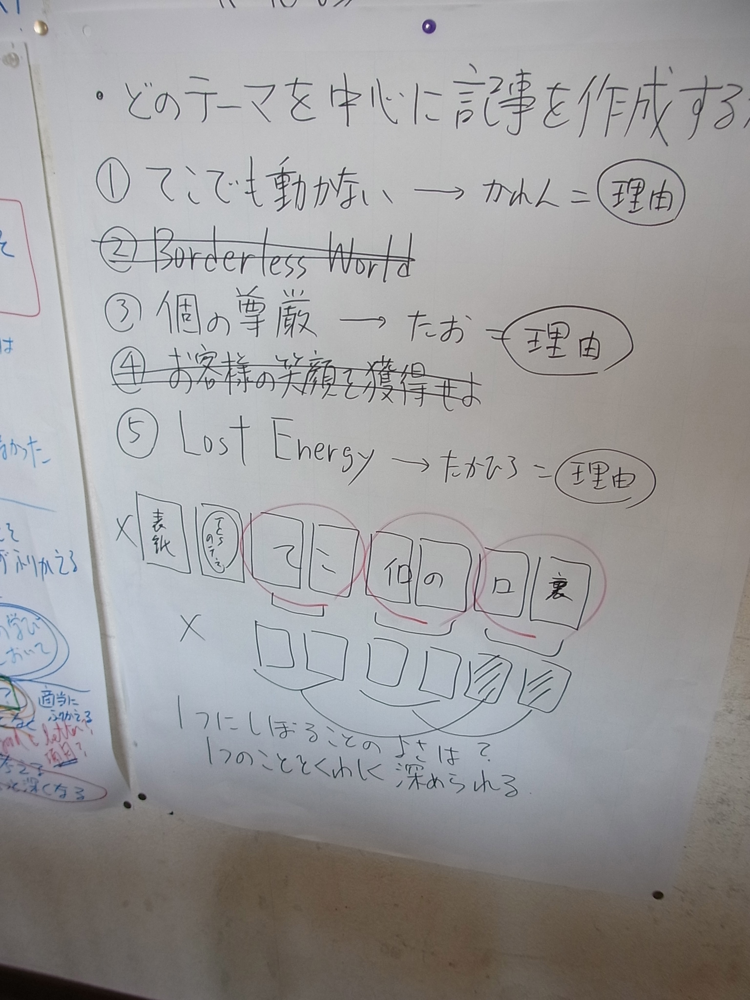
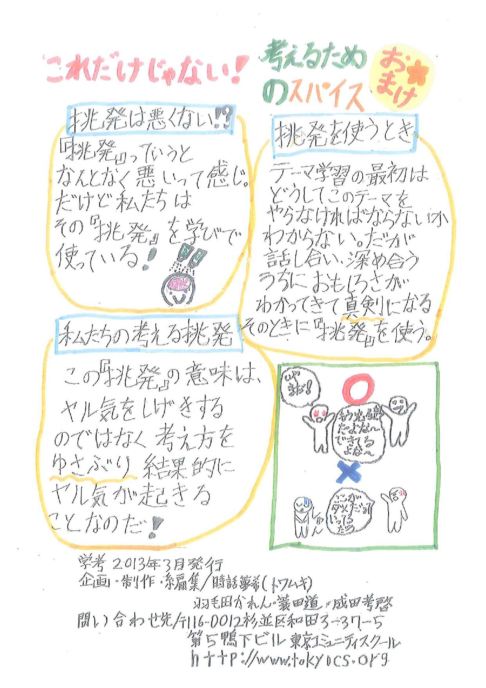

作業場: 「探究学習を探究する」
<授業計画 >
授業計画
クラス/学年: ５年 年齢: 10〜11歳
学校: 東京コミュ二ティスクール School code:
タイトル: Dear Editor
担当教師: 市川 力
実施時期: ２０１３.２. ５〜３．１４ （６週間）
時間数: ２７時間
1. What is our purpose?
1a) To inquire into the following:
教科融合テーマ
意思表現 How we express ourselves 考え・感情・性質・文化・信念・価値観を知って表現する方法、過去を振り返り創造力を伸ばし楽しむ方法、美を愛でることの探究
central idea
情報は人に編集されて伝わり、自分で編集して認識される。
1b) Summative assessment task(s):
セントラルアイディアに関する児童の理解度をどのように測るのか?児童の自発的行動を含め何をその根拠とするのか？
- 成果物を用いたパフォーマンス：「TCSのテーマ学習で何をどんなふうに学んだのか訴え、学びの意義と魅力を伝える」というコンセプトで小冊子を製作し、完成した小冊子を、テーマ発表会の際にプレスリリース風に発表する。
- 小冊子の内容とデザインを評価するルーブリックを子どもたちとともに作成し、自己評価を促す。テーマ発表の際には、オーディエンスにも、そのルーブリックに基づいて評価してもらい、フィードバックを得る。
〜内容についてのルーブリック〜
4 写真・図・絵・文をうまく用いて説得力ある形で主張が表現されているうえに、記事どうしの統一感があり、小冊子全体のストーリーを感じる。
3 写真・図・絵・文をうまく用いて説得力ある形で主張が表現されているが、記事どうしの統一感がなく、小冊子全体のストーリーがない。
2 伝えたいことはわかるが、主張に説得力がない。図・絵・文のつながりもいまひとつ。
1 冗長な部分もあれば、不足している部分もあり、伝えたいことがわからない。
〜デザインについてのルーブリック〜
4 色づかいも考慮し、写真・絵・図と文のレイアウトも適切で、文字の大きさ、美しさも文句なく、ミスがない。
3 文字は美しく、誤字脱字もない。ただレイアウト、写真・絵・図の使い方がいまひとつ。
2 文字は比較的美しいが誤字脱字がある。
1 文字が乱雑。誤字脱字も目立つ。
2. What do we want to learn?
どのようなコンセプトをこの探究で重要視するのか?
key concepts : form / perspective / responsibility related concepts : 編集 / デザイン / 推敲（校正） セントラルアイディアに到達するために何をどのような流れで探究するのか?
- 情報を編集するプロセス
- メディアを通じた自ら編集した情報の発信
- 情報を発信する際に持つべき責任
どのような教師の質問や仕掛けがこれらの探究を駆り立てるのか?
- 「編集」ってどういうことなんだろう？
- テレビや新聞・雑誌はどんなふうに編集されているんだろう？
- ツイッターの文字数（140字）で「事実」や「主張」を編集してみよう。
- 自分はいったいどんなふうに情報を「編集」しているんだろう？
- どんなデザインの工夫がなされているかな？（人気のあるフリーペーパーについて）
- どんな内容を記事にして、どんな順序で並べたら、TCSのテーマ学習の中味と魅力についてうまく伝わるかな？（どんなふうにストーリーを展開しようか？）
- 私たちの意図をもっとうまく相手に伝える見出し・タイトル・文章表現はないかな？
- どんな写真や絵・図をどんなレイアウトで配置したらもっと魅力的な内容 or デザインになるかな？
- 情報の送り手としての責任を果たしているかな？（ウソやミスはないよね？）
- 聴衆にアピールするプレゼンをするにはどうすればよいかな？
3. How might we know what we have learned?
児童の事前知識やスキルをどのように測るのか? 何をその根拠とするのか？
「編集する」とはどういうことか、子どもたちの持っている先行知識を掘り出して、イメージマップ化する。
児童が探究を経て学んだことをどのように測るのか？ 何をその根拠とするのか？
- 説明のための文章構成の型、比喩・韻をふむといった技法、キャッチーな表現のコツについて提示し、それを活かし、主張を端的にわかりやすく伝えるように文章を構成し、表現する。(form)
- 人気のある、よくできたフリーペーパーに用いられているデザイン上の工夫を発見する。(form / appreciation)
- 自分たちが行ったテーマ学習の面白さ、素晴らしさを生き生きと語る。(appreciation)
- テーマ学習においてどんなことをどんなふうに学んだか、どんなところに価値があるか、説明できる。(Reflective / Evaluation)
- 字数の制約（ツイッターの文字数、記事に書ける文字数）を考慮して、必要な情報を取捨選択してまとめる。主張を明確かつキャッチーに伝えるタイトル・見出しをつくりだす。(Synthesis)
- 読み手の立場になって記事の内容を吟味し、改善する。(Open-minded / perspective)
- 読み手の立場になって、より効果的に自分たちの主張をアピールする文章表現、レイアウトを考え出す。(Communicators / Reflective)
- 他者の考えと自分の考えとをうまく組み合わせてよりよい考えや表現方法をつくりだそうとする。(Open-minded / tolerance)
- 編集会議を通じて、建設的に議論して編集方針を共有化したり、記事の内容・順序、レイアウトをよりよくする決断を行おうとする。(Group decision-making)
- 編集会議で決まった役割分担・業務を誠実に遂行し、締め切りを守り、支障をきたさず、質の高いアウトプットを提出する。(Cooperating / responsibility)
- 誤字脱字、誤情報がないようにしっかり校正する。(responsibility)
- 最後の最後までよりよい品質のものをつくりだすように粘る姿勢を見せる。 (confidence / responsibility)
4. How best might we learn?
どのような学びの体験で児童が探究に熱中し、質問に取り組むようになるか？
- 「編集する」とはどういうことか、自分たちの先行知識を掘り出し、イメージマップ化する。
- 新聞・雑誌の記事を読み比べ、テレビ番組を見比べ、自分たちがどのように事実を受け取ったか、また、メディア側はどんな事実を伝えようと意図しているか考える。
- ある「事実」をツイッターの文字数（140字以内）で表現してみる。その際に、自分がどんな「事実」を取捨選択したかふりかえり、自分の書いた文章が読み手にどう受け止められるか確かめる。
- メンバー全員が記者＆編集部員となり、小冊子作りにとりかかる。小冊子づくりのコンセプトを確認する「編集会議」を行い、読者・目的を明確にした「編集方針」をまとめ103の壁に掲示する。
- 人気を集めているフリーペーパーを入手し、見出し・タイトルのつけ方、写真・絵の使い方、文字数、文章表現、レイアウト、フォント、色づかいについて分析し、よいところをパクる。
- 過去のテーマ学習のテーマファイルを用い、事実を集め、集めた材料を取捨選択し、どんな記事をどのような順序で配置したら「編集方針」に沿い、小冊子としての統一感が生まれるか議論する。
- ６.の議論での決定に基づいて、各自分担し、文字数・構成を意識して記事をまとめる。その際、文章だけでなく、用いたら効果的な写真・図・絵、見出し・タイトルについても考える。
- 編集会議を通じて、出来上がった記事の内容、文章表現、記事どうしのつながり、見出し、タイトルについて議論しつつ、吟味・洗練し、話し合われた内容に基づいて修正する。
- 用いる写真・絵・図と記事とのバランス、レイアウト、さらには文字の大きさ、フォントといったデザイン面についての編集会議を行い、洗練＆修正を繰り返す。
- 小冊子を仕上げる作業を行う。
- 誤字脱字、必要な情報もれがないかどうか最終校正を行ったうえですべての作業を終了。
- テーマ発表のプレスリリースのときに用いる「中吊り広告」をつくる。
- テーマ発表会において小冊子の内容と魅力についてプレスリリース風にアピールする。
どのようなスキルと学習者像の特性が成長する機会があるのか?
- Learner Profile : Communicators / Open-minded / Reflective
- Transdisciplinally Skill : 【thinking】Synthesis / Evaluation 【social】Cooperating / Group decision-making ・ Attitude : appreciation / confidence / tolerance
5. What resources need to be gathered?
使える素材は何があるか？
現地：オンリーフリーペーパー（渋谷PARCO Part 1)、現物：フリーペーパーを集める
探究を促すためにどのような環境づくりをするか？
- オンリーフリーペーパーに出向き、人気の高いフリーペーパーを入手する。
- 編集会議には、フリップチャートを用いる。会議の内容は103の壁にはってゆく。
- 小冊子づくりの工程をcontinuum として掲示する。
6. To what extent did we achieve our purpose?
Assess the outcome of the inquiry by providing evidence of students’ understanding of the central idea. The reflections of all teachers involved in the planning and teaching of the inquiry should be included.
- 壁一面に書き出したメモを見ながら、編集会議を積み重ね、自分たちの考え方、学び方の特徴を洗い出し、どれをトピックとして選び、訴えるか決めた 後、記事づくりに入ったので、何を書いたらよいのか迷うことなくすぐに記事をまとめることができた。これをたたき台として、いかに文章「量」を削るか、そ の分、図解・イラスト・写真によってどう補うか、言いたいことをより伝わるように「表現」するにはどんな「言葉」を選ぶか、という作業に没頭できた。これ がまさに「編集作業」のコアであり、必然的に「編集力」を磨くことにつながった。
- 自分たちの作った記事を、見学者に読んでもらい、フィードバックを得ることで、自分たちの提示した「情報」が読み手の「認識」によって「編集」されて受けとられてしまうことを痛感した。
How you could improve on the assessment task(s) so that you would have a more accurate picture of each student’s understanding of the central idea. - テーマ発表後のフィードバックを経て、さらに作品を磨くチャンスをつくること。
What was the evidence that connections were made between the central idea and the transdisciplinary theme?
- TCSのテーマ学習という新しい学びのスタイルを行っている当事者意識と、なんとかしてこの学びを多くの人々に広めたいという使命感が、子どもた ちを強く小冊子づくりへと導いた。この目的を果たすためには、「情報」を効果的に「編集」せざるを得ないし、それは自分たちの「意思」を相手に伝わるよう にいかに伝えるか必死になって探究することに自ずとつながってしまった。きわめて authentic なテーマと言える。
7. To what extent did we include the elements of the PYP?
What were the learning experiences that enabled students to:
develop an understanding of the concepts identified in “What do we want to learn?”
- 限られた枚数・スペースしかないという制約の中で、読み手に訴えかけるように表現するにはどうしたらいいかという仕掛けが、文・絵・写真・イラストの使い方を工夫する意識を生み出した。(form)
- この「小冊子」の質を高めれば、自分たちの学びの意義を多くの人に伝えられるし、スクールの評判を高め、素晴らしいプロモーションにもなるという意識が、志願残業してでも、何度も練り直したいという気持ちを生み出した。(responsibility)
- 先輩たちの作った小冊子を編集のプロである清田さんのコメントを通じて見直すことで、どんな form でまとめ、どんな perspective を持つべきか真剣に考える姿勢が生まれた。
demonstrate the learning and application of particular transdisciplinary skills?
- 「伝わるように伝える」ためには、文章はもとより、図解・イラスト・写真を効果的に用いなければならず、そのために必死になって頭を使った。(synthesis)
- 言いたいことをより少ない文字数でわかりやすく端的に表現するために効果的な方法を常に意識して（比喩を用いたり、もっともふさわしい語彙を選んだり）文を磨いた。(evaluation)
- 締め切りが近づき、時間がない中で、あきらめずにアウトプットの向上を図るために、お互いの仕事の中味に気を配り、手際良く効率的に作業を分担し、助け合った。(cooperating)
develop particular attributes of the learner profile and/or attitudes? In each case, explain your selection.
- 見学者（清田さん・SFCの学生）からの率直なフィードバックを、「読者」は自分たちの表現をこうとらえるのだと冷静に受け止めた。だからといっ て言いなりにはならず、しつこく議論・説明し、他の人の考えと自分たちの考えをどうつなぎ、どうすれば伝わるように表現できるか positive に考え、修正するきっかけにした。(open-minded / tolerance)
- 誤字脱字、伝わりやすさ、見やすさをチェックする校正作業によって最後まで質の向上に努めた。（reflective)
- 記事を作るために、改めて自分たちのしてきた学び方を深くふりかえることで、自分たちのやってきた学びの面白さ・深さ・価値を再認識した。(reflective / confidence)
8. What student-initiated inquiries arose from the learning?
Record a range of student-initiated inquiries and student questions and highlight any that were incorporated into the teaching and learning.
- どうしたらインパクトあるタイトルになるだろう？ →自分たちの学びのスタイルを童謡で表現すれば、覚えやすいし、使いやすくなると考えた。（「むすんでひらいて」と「しずかなこはん」の曲に合わせてまとめた）
- 見学に来た清田さんにこれまでの「小冊子」を手渡しし、フィードバックを求めるとともに、自分たちの小冊子ができあがったときにもぜひ評価してほしいと頼んだ。
At this point teachers should go back to box 2 “What do we want to learn?” and highlight the teacher questions/provocations that were most effective in driving the inquiries. What student-initiated actions arose from the learning? Record student-initiated actions taken by individuals or groups showing their ability to reflect, to choose and to act.
- 人の意見を耳にしたとき（テレビ・朝の会・学びすべてにおいて……）、書かれた意見やアイデアを目にしたとき（雑誌・ポスター・絵……）、「こん なふうに編集されてるんじゃない？」というふうに口にすることが癖になった。目にし、耳にする「情報」にどんな加工がなされているか、また、自分が情報を どう加工して受け取るか、意識して物事を見るようになった。（編集されないことはないという perspective の誕生！）
9. Teacher notes
- テーマ発表の際に、オーディエンスから、「挑発」という言葉を誰が言い始めたのかという質問がなされた時、子どもたちが、う〜んと悩んだ後、特定の誰でも なく、みんなから生まれたと答えたことに「オッ！」と思った。この言葉を最初に発した子の名をさらっと答えるかなと思ったからである。しかし、よく考えて みれば、「挑発」によって学ぶという文化は、綿々と培われて来たTCSにおける探究の核となるカルチャーと言える。それは、今回作られた小冊子の内容を まったく知らず、ふらっと卒業式に来た卒業生が、「むちゃぶりがあって、その後、挑発なんだよね」とさらっと言ったところに見事に現れている。この卒業生 は、一昨年に最初に作られた小冊子を作成したメンバーであり、このときの小冊子が、『子どもをなめてはいけない』という「挑戦的」なタイトルになったの は、彼らなりの大人への「挑発」だったのかもしれない。となると、今回、小冊子を作った子どもが「発見」したというよりも、これまでの先輩達が歩み、つく りだしてきたカルチャーが熟成され、たまたま今回担当した子どもたちによって「言語化」されてしまったという感覚が正しく、そこまで深く気づいていたかど うかは別として、無意識に「みんな」と答えたのかもしれない。小冊子をつくり続けてきたことで、これまで言語化されていなかった探究のカルチャーが明らか になるとはとても興味深い。これらの「小冊子」につむがれた子どもたちのことばは、大事な研究資料と言えるだろう。
<概要 >
Dear Editor」～概要～
タイトル：Dear Editor
探究領域：意思表現
情報は、編集されて人に伝わり、また、人は情報を編集して認識せざるを得ない存在です。しかし、普段、私たちはこのことを意識できず、いい加減な情 報をうのみにしてしまったり、適当な情報を自ら流してしまったりする「主体」となっていることに無自覚です。そこで、発信する意義のある情報を、責任持っ て発信し、相手の心を動かすように伝えるために編集する作業をひたすら重ねてゆきます。では、子どもたちにとって編集する意義のあるテーマとは……それ は、自らの学びをふりかえり、そのコツを明らかにすること。TCSならではの学びの面白さを子ども目線で解明し、その意義をTCS以外の人の心を動かすよ うな「小冊子」としてまとめ、“編集の達人”を目指します。
RI
<編集って何だ？(1) >
<編集って何だ？(2) >
Map: 0206-001
Map: 0206-002
Map: 0206-003
<編集って何だ？(3) >
編集って何だ
「“編集”ってどういうこと？」
まずは、今回の学びの中心となるコンセプトについて子どもたちが どんな先行知識を持っているかマイニングする作業から始めました。
「編むっていう漢字が入っているから何か織ってからめる感じ……」
漢字に着目して意味を推測してみるのはいい考え方です。
「よくするために作りかえること」 「文をもっとうまくする」 「そのためにつけたしたりする」 「つけたすだけじゃなくて削るときもある」
新しい学びを始めるには、まずインプットしないとダメ！と当然の ように思っている人が多いのですが、そんなことはありません。実 はこんなにも豊かな先行知識を持っているのです。この先行知識を 洗い出すことからスタートし、それを基盤に豊かに拡張してゆくの が学びによる「探究」です。
「編集」という言葉の意味については、かなり的確にとらえている ことが見えたところで、今回の探究の「本質」である、「人間が編 集するプロセス」について考えてゆくことにしました。そこで
「どのように私たちは編集しちゃうんだろう？」
という「問い」を投げかけました。するとある男の子が、
「テレビって編集されるんでしょ。よくここ編集してとか出演者が 言うよね」
と発言。確かに、今、テレビを見ていると、芸人がやたらとここは 編集しないで使って！とかどうせ編集されちゃうんでしょ！という ような「禁じ手（これは私の個人的見解ですが……）」を乱発して います。おいおい待てよ、あんたたちは「編集」を前提に「芸」を 見せてるのかい？とあまりにもプロ意識のないことにあきれてしま います。（もちろんそんなシーンを平気で「編集」して流している テレビ局が悪の根源なのですが……）
一方、子どもも、私とは異なる見方で、テレビの編集というものの 「ウソくささ」に気づいていました。都合のよいように適当に切っ て、くっつけて、つなげているから、本当の姿が見えないかもしれ ないという健全なる「疑念」をちゃんと抱いている。メディアリテ ラシーの欠如しているそこいらの大人よりよほど立派！その「感性」 を失うなよと願うと同時に……次のゆさぶりにかかります。
「では、きみたちはふだん『編集』してないのかな？」
テレビの映像や新聞の記事が送り手の都合に合わせて作られている ことを糾弾する映像は、You Tube にたくさんあげられています。 たとえば、「街の人の声を聞いてみました」というシーンが、ニュ ース・情報番組にありがちですが、同じ人物がいろいろな番組に違 うシチュエーションで繰り返し出ていたことを暴露する映像。映像 だけでなく、新聞や雑誌のような活字メディアでも、同じ出来事が まったく異なるニュアンスで取り上げられるケースがありました。 しかし、それはあくまでも自分以外の人が「編集」しているという 「視点」です。かつてはマスメディアを握らないと広く情報を発信 することはできませんでしたが、今では、インターネットを活用し て自ら「情報の送り手」として主体的に情報発信することが可能で す。ということは、自分も「編集」の受け手ではなく送り手の側に まわってしまうことになるわけで、ただ「他人事」としてマスメデ ィアのやり口を非難しているだけでは不十分です。
実は、日常のほぼすべての場面で私たちは自分に都合よく「編集」 しないわけにはいかない存在であることに気づく必要があります。 そのためのゆさぶりが
「では、きみたちはふだん『編集』してないのかな？」
という問いでした。
もしA君が『このコロッケまずい』」と言うのを聞いたとき、コロ ッケの味がまずいことにフォーカスして「編集」するのか、なんで もかんでもまずいというA君の姿勢にフォーカスして「編集」する のかで、伝えたいニュアンスはまったく異なります。
「相手にムカついてしまうときもこっちの勝手な思いでそうなると きがあって、それも編集だよね……」
ある子が思わずつぶやきます。そう、まさにその通り！
「記事」を作成する以前に心の中にわいてきた「思い」が「編集」 を左右している……私たちはすべての瞬間において、「 物事を判断し、考えざるを得ない存在ではないか……ようやく「ミ ッション」に入ってゆくための前提となる「認識」にたどりつき ました。
私たちが否応なく情報を編集して受けとり、発信せざるを得ない という「認識」を持って、私たちは自分の伝えたいことを「吟味」 して選び、いかに相手の心を動かすように「編集」して伝えるか という「ミッション」に挑戦開始です。
RI
Map: 0207-001
<編集会議」で「編集方針」を決める(1) >
ポスター(小冊子にまとめるには)
Map: 0212-001
Map: 0212-002
<編集会議」で「編集方針」を決める(2)>
Map: 0213-001
Map: 0213-002
Map: 0213-003
Map: 0213-004
<編集会議」で「編集方針」を決める(3)>
編集会議」で「編集方針」を決める(1)
実は、いつでも人間は情報を「編集」せざるを得ないのだという 「編集」についての新たな「認識」を獲得したところで、いよい よミッションに取り組みます。今回のミッションは、TCSの学び の魅力を伝える「小冊子」を作り、TCSの学びの意義を世に知ら しめ、共感し、支援してくれる人を増やすことです。そのために 優れた「編集者」となることが求められるわけです。
まず、先輩達が作成した過去の「小冊子」を分析することから始 めます。目を引くのは、写真やイラストを効果的に用い、レイア ウトしていることです。これは、渋谷パルコにあるオンリーフリ ーペーパーに出向いて集めてきた魅力的な「小冊子」とも共通し ています。
写真・絵・図をうまく配置し、そこにインパクトがありながら、 相手の共感を促す端的なフレーズを、字体も工夫して加えること が、魅力的な「小冊子」を作るカギだということが見えてきまし た。
「手にとってもらえないような小冊子じゃダメだよね」
ある子がつぶやきます。まったくその通り。中味を読んでもらう 前に、あれっ？これなんだろう？面白そうだな……よくできてる な……と思わせて、「小冊子」に手が伸びるように仕向けなけれ ばならない……そのための工夫が「編集」の大事なプロセスのひ とつだということを子どもたちは実感しました。
TCSのような小さくて、変わった「学校」のプレゼンスを高める 絶好のメディアこそ、子どもたちが作成する「小冊子」だという ことを、これまでの子どもたち同様、今年の子どもたちも深く理 解しています。したがって、ただの学びではなく、「おれたち こそ広報の最適任者」というauthenticな「思い」がみなぎって います。のっけから「じぶんごと」の「仕事」という思いでいっ ぱい。やらされ感は皆無です。
とはいえ、やる気だけで魅力的な小冊子はできません。そこに は「戦略的な思考」と「面白いアイデア」と「高いクオリティ のものをつくりたいという志」とがないといけません。
「戦略的思考」の第一歩は、全体としてどんな内容の「小冊子」 にするかについての「編集方針」をしっかり固めること。それ が決まれば、「方針」に基づいて、どんな「記事」を書き、ど んな「ストーリー」を読者にイメージさせるか、さらには、写 真やイラスト、キャッチーな見出し、タイトルによってどう補 強してゆくか議論できます。そうなれば、後は、議論しては書 き、また議論しては書き直し……というサイクルをひたすら繰り 返して、よりよい「小冊子」になるまで磨いてゆくのみです。 そこで、記念すべき第１回「編集会議」は、「編集方針」を決 めることからスタートしました。
「やっぱり今回も、１つのテーマ学習についてじっくり解明し たいよね」
TCSの学びの特徴でもあり、魅力とアピール度が高いのはやは り「テーマ学習」です。今年度行った５つのテーマ学習の中の どれか１つをピックアップして、子どもの目線で何をどのよう に学んだのか明らかにしてゆこうというわけです。これまでの 先輩達と同じ流れですが、この点については、あえて異なる流 れを作って奇をてらう必要はありません。恐らく世の大人達の 多くは、TCSならではの「探究学習」の要である「テーマ学習」 を子どもたちがどう分析するかに強い関心を抱くはずです。そ の狙いは的確です。ということで方向性はあっさり「テーマ学 習の魅力を探る vol.3」とすんなり決まりました。
では、どのテーマ学習を選べばよいか、そのテーマをどんな切 り口で料理するかについて「編集方針」をまとめるよう促し、 話し合いを続けた結果、まとまった「編集方針」は……
「テーマ学習で発見した探究の仕方のコツを明らかにする」
ということになりました。
「いろんなコツを学んでいるときに見つけたもんね」 「それは他の学びのときにも使えるしさあ」
なるほどコツを「一般化」するわけか……それは面白い！
「編集方針」が固まると、早速、子どもたちはどんなコツを用 いたかふりかえり始めました。どんどん模造紙に「発見」が書 き出されてゆきます。しかし、それを「記事」にまとめてゆく 作業こそ「大変」。
山アリ谷アリの「小冊子」づくりのプロセスに突入です。
RI
Map: 0214-001
<語り合って広げる(1) >
ポスター(どうやって記事にする)
Map: 0219-001
Map: 0219-002
Map: 0219-003
Map: 0219-004

<語り合って広げる(2) >
Map: 0220-001
Map: 0220-002
Map: 0220-003
Map: 0220-004
Map: 0220-005
〜 2月20日の学びを見学して 〜(B君)
【Bさんの感想】
東高円寺にある、NPO法人東京コミュニティスクールの見学をしてきました。このコミュニティスクールでも、毎年の年度末に一年間を通して学んで きたことをパターンにまとめあげるという授業が行われています。小学生が書いているパターン、かなり良いもので、僕たち自身びっくりします。というか危機 意識をもたないと、大学生がこんな状態じゃ駄目だと思わされます。
昨日は、ブレストで発散したアイデアの中から出てきたパターンの種をもとに一つの種を選んで、パターンに書いていくためにその状況や問題を再度議 論していました。テーマは「学びの途中で振り返ってなおす」というものです。TCSの子供たちは、毎回のプロジェクトの途中ごとに、リフレクションを行っ ている、ということに気づいているだけでも十分すごいですが、それがどういうことなのかをパターンに記そうとしている中で起こる議論も、すごいものでし た。
正直、最初は安易な？というか、優等生的なソリューションを提案してしまうこともありましたが、その根本を揺るがすような質問を僕がすると、しっ かりとその意味を把握し、どうすれば意識的になりすぎないないように「学びの途中で振り返ってなおす」というリフレクションが可能になるのか、ということ を色んな可能性を考えながら検討していました。 どんなパターンになるのか、今から本当に楽しみです。
〜 2月20日の学びを見学して 〜(C君)
【C君の感想】
昨日の東京コミュニティースクールの見学報告です。Bさんのメール(注・上記の記録)を踏まえて書きたいと思います。僕らが書いてきたパターンの どのパターンが活きているのかを意識しながら見ると、気づきがあります。例えば、高いレベルの語彙を市川さんは使いますし（＝変な言葉）、こどもたちは市 川さんの提案や冗談を一蹴することもあり、関係はフランクで す（＝生成的な参加者）。市川さんは子供達にむちゃぶりをしますが、これを子供たちは楽しんでいるようですし、挑発はもはやTCSでは文化であるようで す。自分たちのパターンの妥当性や、リバイズの際の言葉遣いのヒントがでてくるかもしれないですね。
僕らが見学する前回の講義では、「ひろげる」ことがTCSの特徴だということで、話し合って広げて、それをしぼっていくという在り方を、 TCSの子供たちが歌にしていたのが非常に面白かった、というか仰天したので、紹介します。
（むすんでひらいて のメロディ）
はなして ひろげて しらべて ためす つぎしぼって またひろげ ためして えらぶ
パターンを歌にする、という誰も考えても見なかった発想を良しとし、実際に形にしてみるのがTCSらしいところだと思います。
「学びの途中で振り返ってなおす」ことについて、子供たちから、毎回最後の10分間に振り返りの時間をつくれば良いという意見が出た際に、Bさんの「先生の意図をよんで優等生的な振り返り や感想を言うだけの人も出るのでは」という指摘（＝挑発）をしました。 それに対して、「確かに！」とTCSの子供たちはその指摘の意図を十分に理解するのです。 「強制的に振り返るんじゃなくて、自然に自分で振り返らなきゃいけないよね」と、実に本質的な提案が出るのには驚きます。
きっと今後もしばらく、このテーマ学習の時間はパターンを書いていくのだと思いますが、もしかしたら歌でまとまるかもしれないし、あるいは まったく異なるアウトプットに出会えるかもしれないと思うと、非常に楽しみです。
<語り合って広げる(3) >
<記事のタネを記事にする >
Map: 0226-001
Map: 0226-002
Map: 0226-003
Map: 0226-004
<記事のタネを記事にする >
Map: 0227-001
<記事のタネを記事にする >
記事のタネを記事にする
先週の語り合いで、記事にすべき３つのタネを見つけることができ ました。すべて学びをどのように進めるかについてのコツをあらわ したものです。しかしながら、まだあくまでも「タネ」に過ぎませ ん。この「タネ」をしっかり育てて、みんなの共感をよびおこす記 事へと育ててゆかなければなりません。いよいよ記事づくりの大詰 めにさしかかりました。
「まずは編集方針を確認……」
タネが見つかったので安心とばかりに、ただ好き勝手なことを書け ばよいというわけではありません。すべての記事どうしのつながり、 つまりストーリーがなければ、バラバラ感を読者に与えてしまいま す。TCSの学びを特徴づける、テーマ学習の魅力を学び手である子 どもたちの立場で徹底的に解明してゆくのがこの「小冊子」の編集 方針です。この方針に基づいて、各自、分担して記事を書き上げて ゆきます。
子どもたちは、早く記事を書きたくてうずうずしている様子です。 「語り合い」に「安心感」が大事なように、「書く」作業において も、思いっきり没頭できる「環境」をつくることが大事です。
では、どんな「環境」がつくられていたか……
それは教室中の壁にはられた、これまで自分たちが語り合ってきた ことの記録でした。
記事の「タネ」が生まれるプロセス、そして「タネ」が何を言おう としているのか、みんなで語り合ったことが、発した言葉そのまま で、整理されずに、時系列でひたすらメモしてあるのです。一見す ると雑然と書きなぐられたメモなのですが、実は、こう表現されて いるからこそ「アイデア」を生む源泉となり得るのです。
「あのときどう考えたか思い出せる……」
そうなんです。整理していないからこそ、最初に思いついたときの 感触も含めて、想起することができるのです。自分の言いたかった こと、友達の言いたかったことが目の前にある……これは脳の思考 への負担を大幅に減らします。見事に「思考のプロセス」が視覚化 され、外化されているわけです。さらに、目の前の紙に、書くべき ことの「素」が書かれているので、書くことへの苦手意識を子ども たちに持たせてしまう原因となる
書くことがない……頭が真っ白……
という状態も生まれません。目の前に料理すべき素材は転がってい る、そのうえ「編集方針」も固まっているから、何の料理を作るべ きか明確である。となればあとはひたすら調理するだけです。だか ら「早く書かせて……」という気持ちになるのです。
探究教師としての関わりは、どう調理すればよいかのポイントを伝 えておくことと、子どもたちのつくりつつある料理がうまいか、ま ずいか、味見してフィードバックすることだけです。では、伝える べき「記事の調理法」とは何かと言うと……
１つは、記事のまとめ方の「視点」を与えることです。ある学び方 をするのはどんな状況なのか、その状況ではどんな問題が生じてい るのか、そのときに具体的にどのようにして切り抜けていったのか、 という「視点」を持って説明してみようということ。「視点」を持 って書けば、ただバラバラに事象を並べただけの記事にならず、学 びのコツを相手の認識のプロセスに寄り添って伝えることができま す。
そして、もう１つは、まずメモに書かれていることをどんどん文章 化してゆくこと。つまり、最初から選んで書こうとするのではなく、 思いついたことをすべて文章にしておけということです。壁のメモ を素材として加工したものをたくさん作っておく！ことと言えまし ょう。そうした後、できあがったものを眺めてみれば、自ずといち ばん良さそうなものがどれか見えてくるし、また、加工されたもの どうしの新たなつながりまで見えてきて、さらに面白いものに育っ てゆくわけです。まず広げてみたうえで、削って、研ぎ澄ましてゆ くのです。
子どもたちは熱中して、黙々と作業を続けます。協働作業と個人作 業との絶妙なバランスも、TCSのテーマ学習の魅力だな……と思わず 感じてしまいました。みんなのときは、誰かの意見にタダのりして ボーッとしているわけにはいきませんし、ひとりのときも思考回路 をフル回転している！これだけ常に頭を働かせているのだから、た いしたものです。
「ちょっと黙っててくれる！」
ゴメンなさい。先生が暇なものですから、話しかけて子どもを邪魔 してしまいました。
しかし、この先、質の高いものに仕上げてゆくのは簡単ではありま せん。
「まだまだこの程度ではダメ……」
という私の挑発的ダメだしにどこまで positive に反発し、
「よし！もっといいものしてやるぞ！」
という気概を示せるかが真の勝負所なり。よいものを目指してガン バレ子どもたち！
RI
<磨いて、磨いて、磨く(1) >
<磨いて、磨いて、磨く(2) >
〜３月６日の学びを見学して〜 (K君)
【Kさんの感想】
見学というより、子供達の授業に”入り込む”形で貴重な時間を共有させていただけたことを嬉しく思っております。感想を述べさせていただきます と、私が何よりも驚いたのが彼らの集中力です。２時間近くの時間、頭を動かし続けるということは誰にとっても等しく難しいことだと思います。ましてやそれ が趣味等ではなく、教室という密閉空間の中で行われるものであれば尚更です。しかし彼らは途中で「もう嫌だ！」と投げ出すことも、「おっちゃんのやりたい ようにすれば」と言うこともなく、ただひたむきに自分の前にあるものと向き合い、思考を巡らせ続けていました。
それはなぜか。私の中で出た推測は２つです。一つは、彼らの中で「小冊子をつくる」というミッションが完全に自分ごとになっているということ。もう一つは、彼らが「小学生の自分」ではなく「人間(社会人)としての自分」で在りたいと思っているということです。
ミッションの先にある未来が彼らの中で一致している、と言った方が正しいかもしれません。彼らが小冊子をつくる理由は、「TCSをもっといろんな 人に知ってもらいたい！」という想いだとすると、それは彼らがTCSの良さを自分自身の中で確信している証拠です。妥協しないのも、自分たちが伝えたいこ とが伝わらないことが悔しいからだと思います。……ということは、その悔しさを彼らは以前に経験したことがあるということで、やはり成長のバネは「悔し さ」なのではないかと改めて感じました。市川先生の「子供だったらこれでいいかもね」に悔しがる彼らの姿を見て思ったことです。
変な話かもしれませんが、彼らの負けず嫌いさにはとても親近感を抱きました。私も悔しさをバネにして進む負けず嫌いですし、その上肩書きが好みま せん。「大学生」でも「慶應生」でもなく、私は私自身で在りたいと常に思っております。彼らと向かい合って話が出来たこと、とても嬉しかったですし、素晴 らしい学びを得ることができました。
〜３月６日の学びを見学して〜 (S君)
【S君の感想】
子どもたちにつくること・クオリティを上げることが意識づけられているために、部外者が訪れてもフィードバックを受け取って学ぶという自然な姿勢が保たれている点に非常に驚かされました。
また、市川先生が子どもたちに「これは仕事なんだぜ」と何度も言っていた姿も印象的でした。子どもたちも、つくることのむずかしさに悩みながらも 理解した様子で取り組んでいたところに感動しました。KJ法の川喜田二郎が、人を育てるためには単なる「作業」ではなくて「ひと仕事」が必要なんだという ことを著書に書いていましたが、市川先生のおっしゃる「仕事」という言葉を聞いたとき、そこにはこの「ひと仕事」の感覚があるのかもしれないなと思ってい ます。 子どもたちにとっても市川先生にとっても、締切直前の厳しい時期かと思いますが、 もう少し経って、彼らには素晴らしい成果と共に「ひと仕事」を終えた充実感が訪れるのではないかなと、自分のことではないですが期待しております。
彼らの仕事ぷりを見ていて、自分自身「生半可なことはやれないなあ」と今やっていることへの内省を促された部分がありました。次に3人に会ったときには「俺もまだまだ頑張ってるぜ！」と次につくったものをまた彼らに見せられるようやっていきたいと思います。
<磨いて、磨いて、磨く(3) >
磨いて、磨いて、磨く
「どうしてみんな壁の方を向いているんですか？」
この学びを見学にいらした方が思わずつぶやいたコメントでした。確かに、 ふつうの授業なら、黒板に向かって整然と机が並んでいて、黒板と教師の 方を一斉に向いているか、ディスカッションするためにコの字形または円形 になっているか、あるいはグループ活動で机をくっつけているか……のうち のどれかでしょう。ところが、それぞれの子どもたちが全員別々の方向を 向き、そのうえ、壁に正対し、時折、壁に書かれていることを眺めながら、 黙々と書き続けています。
それもそのはず、フリップチャートにどんどん書き込んでいったメモが壁 一面に貼られているからです。壁に貼られた紙にびっしり書き込まれたメモ にはみんなで語り合って生まれ出た言葉が余すところなく記されています。 自分たちの思考の足跡が目に見える形で残っているのですから、当然ながら いろいろ「ひらめき」、それをつなぎ、まとめて文章にしてゆくことができ ます。
（あれが大事で……これとつなげて、だから言いたいことは……）
と考えつつ、黙々と文をつくりだしてゆきます。次々に文章ができあがり ますが、ここからがまさに正念場。「言いたいこと」をすべて載せられる わけではありません。「伝えたいことを伝わるようにまとめる編集力」の 問われる大詰めの作業にさしかかりました。
「レイアウトって大事なんだ……」
ある子がつぶやきます。ただ書いたものをだらだらと記事にするだけでは、 誰も読む気になりません。レイアウトを工夫して「魅せる」ことこそ「見 せる」ことです。「魅せる」ためには、文章だけで表現しようとせず、写 真やイラストの助けを借りて、訴える力を増す必要が出てきます。ことば で表現しないで図解することも有効でしょう。文・絵・図・写真をどう組 み合わせ、限られたスペースにどう配置すると伝わるか……
結局、レイアウトを考えて多面的に判断して初めて文が決まる！ ただ文を書いてまとめるだけが編集じゃない！
ということを作業を進めてゆくうちに深く、深く実感し、思わず発してしま ったのが先のつぶやきだったのです。
「写真はこっちがいいな」 「ここにイラストがあった方がいいでしょ」 「この書き方じゃあくどいわりに意味が伝わんない」
言葉はより短く、端的にインパクトある表現で！ 考えの流れはわかりやすく図解！ イラストを補助的に用いて読者をくすぐる！ やったことは写真で見せる！
ということを頭において、ひたすら言葉を磨く作業に没頭する子どもたち でありました。
「わあ、なんかかっこいいなあ！」
文と写真と図とイラストを考えてレイアウトしたページの「試作品」がで きあがってみると、いよいよ小冊子らしくなってきていい感じです。
しかし、次の瞬間……
「このイラストもっと小さくした方がいいかも」 「なんか言いたいことが伝わらないくどい文だね」 「文章もう少し削って図解に変えた方がいいかも」 「写真と文のバランスが悪いなあ」
どんどん改善ポイントが見えてきます。これがプロトタイプすることの意義 です。子どもたちは、早速、修正作業に入ります。やり直しを面倒に感じる どころか、率先して行おうとするのは、もっとよいものがつくれる！という 見通しを持てているからでしょう。
だからといって、悠長に直している暇はありません。締め切りまで残された 時間はわずかです。飽くなき質の向上のために粘るには、残業も必要だし、 よりいっそう集中して作業に臨まないとダメになってきました。けれども、 質の高いアウトプットを出したいという気持ちに火がついた子どもたちを もう止められません。
「残業したいんだけど」
おお、ついに志願残業です。時間の許す限り、磨いて、磨いて、磨きぬい て、よりよいものをつくりたい気持ちに満ちあふれ仕事に没頭。ホンモノの 「仕事師」と化しました。
RI
〜３月7日の学びを見学して〜 (T君)
【T君の感想】
昨日はパターン冊子の作成を見学・参加させて頂き、ありがとうございました。私個人としましては、子供達の「先生」として「生成的な参加者」とし て振る舞いを経験できたり、子供たちの気付きや市川先生の「挑発」に驚いたりと、非常に多くの学びと刺激を得ることができました。私たちの訪問が市川先生 や子供達にとっても何かしらいい刺激になっていれば幸いです。教育プロジェクトもTCSの子供達に負けないように、「未来への使命感」を持ちながらパター ン作成と「広がりの戦略」を考えていきたいと思っております。
〜３月7日の学びを見学して〜 (G君)
【G君の感想】
先日は授業を見学するだけでなく、「生成的な参加者」として授業に携わらせて頂けて、本当にありがとうございました。Pedagogical Patternsを書いている時も、自身の原体験と結びつかない点が多く、どうしても自分の感性から訴えかけるような文章が書けないままでした。先日の見 学では、Pedagogical Patternsの様々な要素を実際に現場で見て、体験することができ、ライターとして本当に良い経験ができたと思っています。
自分があまりためらわずに子どもを「挑発」したり「モヤモヤの種」を残したままでも良いんだと思えたのは、恐らくPedagogical Pattensがあったからだと思います。パターンが入れ子になり、”「生成的な参加者」なんだから答えを持ってなくてもいいし、むしろ「一緒にたくら め」ばいいんだ。”と自信を持つ ことが出来ました。
アクターに自信を持って行動してもらえるようにするためにも、パターンの生成力をもっと高めていくことが必要だと、改めて思いました。
<小冊子」ついに完成！(1) >
<小冊子」ついに完成！(2) >
<小冊子」ついに完成！(3) >
学考(表紙)
学考(1ページ)
学考(2ページ)
学考(3ページ)
学考(4ページ)
学考(5ページ)
学考(6ページ)
学考(7ページ)
学考吊り広告（1）
学考吊り広告（2）
小冊子」ついに完成！
「子どもをなめてはいけない」「THE 子ども力」に続く、３冊目の 「小冊子」がついに完成しました。タイトルは「学考 GAKKO」。 TCSの学びの本質は考え続けることにあるということを端的に表現し たなかなかのタイトルです。子ども一人で車を動かすミッションに 取り組んだ学びのケースを例に挙げて、探究するときにどんなふうに 考えているかを学び手である子どもの視点で徹底解明したとても興味 深い内容です。
考えを広げたり、ふりかえったりするときのコツを、すぐに思い出せて、 使えるようにするために、「むすんでひらいて」や「静かな湖畔」とい った童謡の替え歌としてまとめようなんてよく考えつきました。
考えるときのポイントは、
まず広げてからしぼり、さらにためしてみること
と
ふりかえりの時間がなくても自然にふりかえっちゃう」ということ
の２つでしたが、おまけのページで、考えるときのスパイスのよう なものとして、お互いに「挑発」しあっているという主張がなんと もTCSらしいユニークな発見でした。
見事にテーマ発表でのお披露目も成功し、多くの聴衆からの賞賛を 得ました。素晴らしいスクールプロモーション雑誌の完成！ Good job です。
RI
TCS教室(1)
TCS教室(2)
TCS教室(3)
発表会
<>
Dear Editor』～ふりかえり～
嬉々として、なんら恥ずかしがることなく、堂々と自分たちの学び方を 「童謡」で表現する子どもたちの姿に、オーディエンスは大いに魅了さ れ、見事に自分たちのペースに巻きこんだプレゼンができた。
さて、今回、この学びにおいてTCSの探究文化を現す言葉が誕生した。 それは「挑発」という言葉だ。「挑発」と言っても、相手の感情を刺激 してやる気を出させるわけではない。考え方をゆさぶり、違う見方を促 すことで、結果的にやる気を生んでしまう有効な「言葉かけ」が、子ど もたちの認識したTCS流の「挑発」だ。英語で言うところの devil's ado- vocate に近いかもしれない。
テーマ発表後の恒例の質問タイムのときに、オーディエンスから、
「挑発」という言葉を誰が言い始めたのか
という質問がなされた時、子どもたちが、う〜んと悩んだ後、特定の誰 でもなく、みんなから生まれたと答えたことに「オッ！」と思った。 この言葉を最初に発した子の名をさらっと答えるかなと思ったからである。 しかし、よく考えてみれば、「挑発」によって学ぶという文化は、TCS で行われている探究の核と言える。それは発表会の後に行われる卒業式 にやってきた卒業生が、今回作られた小冊子の内容をまったく知らない にもかかわらず、私に向かって
「TCSってむちゃぶりがあって、その後、挑発なんだよね」
とさらっと言いのけたことによく現れていた。この卒業生は、一昨年、 最初に作られた小冊子を作成したメンバーだった。このときの小冊子が、 『子どもをなめてはいけない』という「挑戦的」なタイトルになったの は、彼らなりの「挑発カルチャー」を表現した言葉だったと言えよう。
となると、今回、小冊子を作った子どもが「挑発」という語をつくった というよりも、これまでの先輩達が歩み、つくりだしてきたカルチャー が熟成され、たまたま今回担当した子どもたちによって暗黙知だった文 化が見事に「言語化」されてしまったということなのかもしれない。だ からこそ「誰が言い出したの？」という問いに対して、「みんな」とい う答えになったような気がする。
小冊子をつくり続けてきたことで、これまで言語化されていなかった探 究のカルチャーが明らかになるとはとても興味深い。
それにしても、この小冊子を作るときの子どもたちのパワーはいつもス ゴイ。スクールフリーな学びの場における、自分たちの学びの意義がど こにあるのか、純粋に知りたいという好奇心と、この楽しい学びをなん とか世間の人々に訴えたいという使命感が、研ぎ澄ましたことばで訴え、 伝わるように伝えたいという強烈な志を生み出しているように思う。
先輩から後輩へ伝えるバトンでもあり、新しい学びのスタイルを学び手 である子どもが世の大人につきつける挑戦状でもある。
貴重な記録である。
RI
〜完成した小冊子『学考』を見て〜(K君)
【Kさんの感想】
「学考」を早速シェアしてくださってありがとうございました！！私が見学に伺わせていただいたときに比べ恐ろしいほどに分かりやすく見やすくなっていて、なんと言いますか、本当にもう驚きです…！！
タイトルや「原理」と「現実」のつながりに気づく”というフレーズは特に秀逸で、これに関しては本気で「すごい！」と思いました。小学生の成果物 に対する一般的な「すごいね～」とは全く違います。私が見たいと言ったカラビナの写真やマインドマップの写真も使われており、一読者としてとても満足で す！！あのときよりも格段にリアル感が増したように思います。
この冊子、本当にクオリティーが高くて、高くて…、私まで勝手に「挑発されて」いま す。お姉ちゃんも負けてられませんね(笑)１つの冊子を３人で作り上げたという経験は、きっと達成感に留まらず彼らにとっての誇りになっていることと思います。次に彼らに会ったときには、是非自ら冊子を自慢して欲しいです。
冊子を見せてくださって本当にありがとうございました。子供たちにも「お仕事おつかれさまでした！」とお伝えください。
〜完成した小冊子『学考』を見て〜(B君)
【Bさんの感想】
データ、ありがとうございます！拝見させていただきました！僕が見学させていただいたときにT君を挑発したものが、ひらめきをつぎにつなぐという 形になって、発表がくると”自然に”振り返っちゃうという展開がなされていて、その理由も明快で、むふむふ、と勉強になりました。
今自分たちで書けなくて苦しんでいることを先をこされてしまった気持ちです。T君にはまた近いうち本当に遊びにいくね、とお伝えください。そしてSFCに遊びにきな！とも伝えておいてください。
次は僕たちの番ですね、先日井庭先生から厳しいコメントをいただき、振り出しに戻っております。それでもなんとか挽回するために志のあるメンバーみんなで考えております。 市川先生はもちろん、井庭先生にも良い！と言ってもらえるようなものをつくらないとT君に顔見せできませんね。頑張りますので、見ていて下さい。
〜完成した小冊子『学考』を見て〜(G君)
【G君の感想】
学考、拝読させていただきました。自分が伺った時にたお君が書いていたパターン、見事にまとまっていますね。冒頭からのドラマティックな展開、” ひらめきをつなぐ”というフレーズ、ひらめきのつながり方（非線形、Zig Zag）。あの段階からまさか”つながり方”まで描写出来たんだと思うと、教育PJも負けてられないです…！
すごく面白いのは、SFCでグルワ（注・グループワーク）が上手くいかない時、原因は大体このどれかに当てはまりそうだということです。
- 良くない意見にはネガティブな反応をする
- 良いアイディアを出そうとする
- メモを残そうとしてない
- 似たような意見をマトリックスなどですぐ整理しようとする
- ひろげて調べてしぼって終わり
TCSの子どもたちは同じ抽象度で「これだと上手くいかない」ので「僕たちはこうしている」ということを記述しています。現役のSFC生が見ても「あぁ～あるある」と思ったので、そう思わせた時点で、上手く中空の抽象度を狙えているなぁ…と思いました。
書き手は読み手以上に、相当なメタな能力が身に付くと思うので、これらのパターンが今後のTCSの学びの中でどのように活きてくるのかすごく 楽しみです。学びながらこのパターンのことを思い出してハッ!となる瞬間が、”パターンを書く”一番の効果を発揮する時かなぁと個人的に思っています。